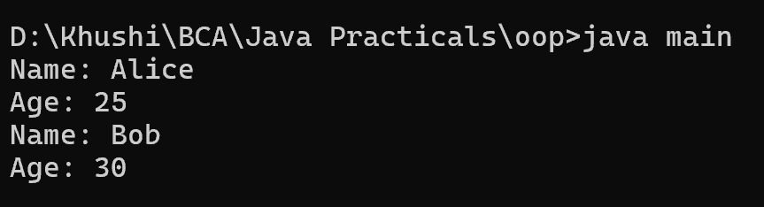

22. Create a class showing an example of copy constructor.
class Person {
String name;
int age;
// Parameterized constructor
public Person(String name, int age) {
this.name = name;
this.age = age;
}
// Copy constructor
public Person(Person other) {
this.name = other.name;
this.age = other.age;
}
public void displayInfo() {
System.out.println("Name: " + name);
System.out.println("Age: " + age);
}
}
class main {
public static void main(String[] args) {
Person person1 = new Person("Alice", 25);
System.out.println("Person 1:");
person1.displayInfo();
// Using the copy constructor to create a new object as a copy of person1
Person person2 = new Person(person1);
System.out.println("\nPerson 2 (Copy of Person 1):");
person2.displayInfo();
}
}
